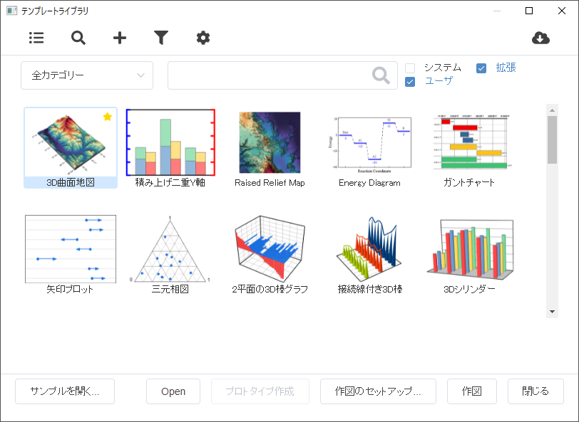
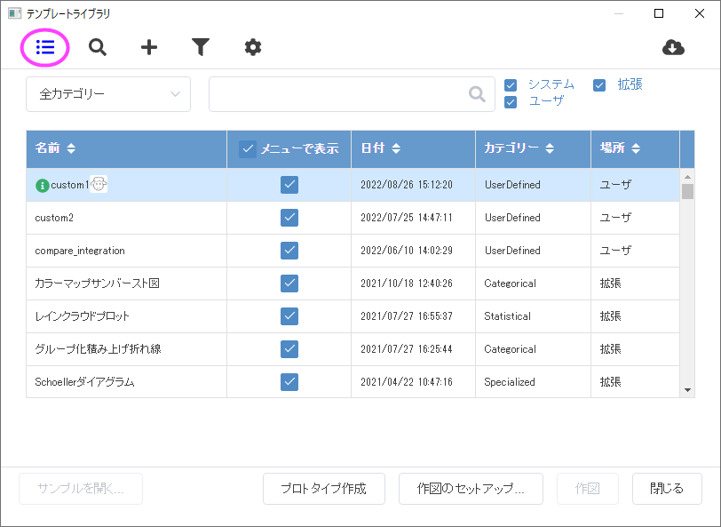
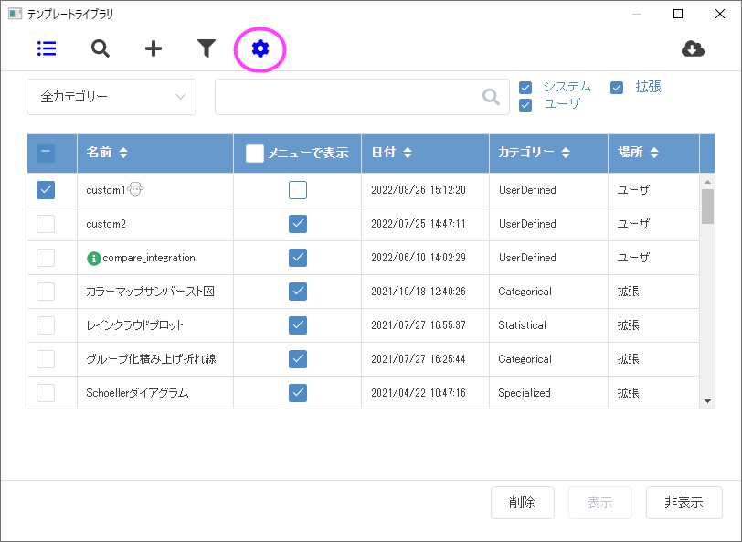
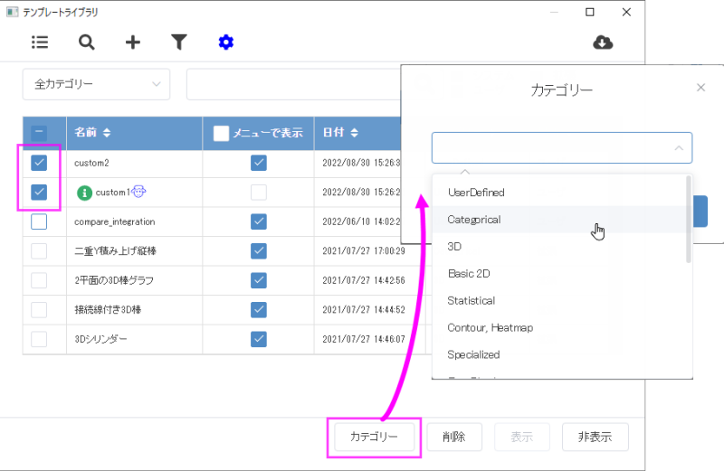

グラフテンプレートライブラリ
グラフテンプレートギャラリー
テンプレートライブラリを使用して、カスタムグラフテンプレートと拡張テンプレート（ダウンロードしたものを含む）、システムテンプレートを整理し、それらのテンプレートにプロットします。
または
- 2Dグラフギャラリー ツールバーのユーザテンプレートに作図ボタン
 をクリックします。
をクリックします。
- 
 | テンプレートライブラリには、すべてのシステムテンプレートが登録されていますが、システムグラフテンプレートの表示および作図は、200以上の組み込みグラフタイプを一覧表示する作図メニューで、必要なグラフタイプを選択することでも可能です。
また、2Dグラフギャラリーや3Dおよび等高線図ツールのボタンをクリックして、システムテンプレートからグラフを作図することも可能です。
|
テンプレートライブラリでできること
ダイアログのツールバーと設定
リストモードに切り替え
リストモードに切り替えボタンを押して、プレビューモードとリストビューを切り替えられます。リストモードでは、全テンプレートが表形式で表示されます。
ユーザテンプレートをスキャン
既存のグラフテンプレートを、ユーザファイルフォルダまたはグループフォルダに追加した場合、ライブラリツールバーのユーザテンプレートをスキャンボタン をクリックしてそれらを自動でスキャンできます。
テンプレート追加
(a) ユーザファイルの他に、フォルダからテンプレートを追加する、または(b)以前にテンプレートライブラリから削除したテンプレートを再追加するには、ライブラリツールバーにある テンプレートの追加ボタン をクリックします。テンプレートのプレビュー画像がある場合、追加されます。しかし、テンプレートおよびプレビュー画像はユーザファイルフォルダに自動でコピーされないので注意してください。
をクリックします。テンプレートのプレビュー画像がある場合、追加されます。しかし、テンプレートおよびプレビュー画像はユーザファイルフォルダに自動でコピーされないので注意してください。
クローンテンプレートをリスト
ライブラリにあるテンプレートの表示を、アクティブなブックで利用できるクローンテンプレートに制限するには、クローンテンプレートをリストボタンをクリックします。
管理モードに切り替え
ツールバーの管理モードボタン をクリックして、管理リストに切り替えます。
をクリックして、管理リストに切り替えます。
テンプレートセンターを開く
テンプレートセンターを開くボタン をクリックしてテンプレートセンターを開き、オンラインテンプレートをダウンロード可能です。
をクリックしてテンプレートセンターを開き、オンラインテンプレートをダウンロード可能です。
テンプレートを検索
カテゴリを選択し、ライブラリ上のテンプレート検索バーにキーワードを入力すると、指定したカテゴリのテンプレートの名前または説明の部分に含まれるキーワードを検索します。キーワードをクリアすると全テンプレートを再度表示します。
テンプレートフィルタ
必要に応じて、検索ボックスの隣にあるシステム、拡張、ユーザ、グループにチェックを付けてリストをフィルタリングできます。
- システムは、作図メニューにあるグラフタイプで使用される組み込みのグラフテンプレートのことです。
- 拡張は、あらかじめ出荷時に組み込まれたテンプレートや後からダウンロードしたテンプレートのことです。
- ユーザは、ユーザが作成して保存したテンプレートのことです。.
- グループは、グループフォルダに保存したテンプレートのことです。Note: グループチェックボックスは、グループフォルダを設定し、そこにワークブック/行列ブックを追加した場合にのみ表示されます。
サンプルを開く
左下のサンプルを開く...ボタンをクリックして選択したテンプレートに関連する組み込みのサンプルグラフを開くか、ラーニングセンターでのオンラインサンプルプロジェクトを検索してダウンロードします。
データを選択せずにユーザテンプレートを開く
ユーザテンプレートを選択し、開くボタンをクリックして、テンプレートファイルを直接開きます。システムテンプレートは、この方法で開くことはできません。
クローンテンプレートにおける必要なデータ構造を確認
クローンテンプレートをクリックして選択し、プロトタイプ作成ボタンをクリックするとプロトタイプワークブックを作成します。ショートネームがNot Usedのシートや列は、そのワークシートや列がクローンテンプレートの作成に使用されていないことを示しています。
選択したテンプレートからグラフを作図
選択したテンプレートが選択したデータに適している場合は、テンプレートをダブルクリックするか、作図ボタンをクリックして、テンプレートにグラフをプロットします。グラフが作図され、テンプレートライブラリが閉じます。
選択したテンプレートが選択したデータに適していない場合は、作図ボタンまたは 作図のセットアップセットアップボタンをクリックして、作図のセットアップダイアログボックスを開きます。この場合、作図のセットアップを使ってグラフを作成する間テンプレートライブラリダイアログボックスは開いたままです。
間違ったソースデータウィンドウタイプ（ワークブックまたは行列ブック）から開始した場合は、作図ボタンをクリックするとテンプレートファイルを直接開きます。
テンプレートリストでの操作
テンプレートライブラリは、条件を満たすすべてのテンプレートを一覧表示するために、2つのモードをサポートしています。リスト内では、表示されたテンプレートに対していくつか操作を実行できます。
プレビューモードの場合
テンプレートの情報を表示
テンプレートプレビューアイコンにカーソルを合わせると、テンプレートの説明とファイルパスがツールチップとして表示されます。
ユーザまたは拡張テンプレートを作図 > マイテンプレートに追加/削除
テンプレートプレビューアイコンのをクリックすると、作図 > マイテンプレートメニューにテンプレートを追加または削除できます。
ユーザテンプレートの編集
テンプレートプレビューの右上の編集ボタンをクリックすると、template_modifyダイアログが開きます。テンプレート名、説明、ウィンドウのショートネーム/ロングネームなどを編集できます。ユーザテンプレートとして再度保存しない限り、システム/拡張テンプレートを変更することはできませんのでご注意ください。
リストモードの場合
リストモードに切り替えボタンを押して、リストビューを切り替えられます。

テンプレートのソート
列ヘッダをクリックしてテンプレートをソートできます。
ユーザまたは拡張テンプレートを作図 > マイテンプレートに追加/削除
メニューで表示の項目でチェックを付けると、そのテンプレートが作図 > マイテンプレートメニューに表示されます。
ユーザテンプレートの編集
選択したテンプレート行で右クリックして編集を選択すると、template_modifyダイアログが開いて編集可能です。
ユーザおよび拡張テンプレートの管理
ツールバーの管理モードボタンをクリックして、管理リストに切り替えます。

管理モードは、上述のリストビューモードと同様、テンプレートのソートや作図 > マイテンプレートメニューに表示するテンプレートを決定できます。
テンプレートライブラリでのカテゴリ変更
名前欄の前にあるチェックボックスにチェックを付けて、1つまたは複数のテンプレートを選択し、カテゴリーボタンをクリックしてドロップダウンリストから対象のカテゴリーを選択します。
Note: カテゴリ変更は、ユーザー定義のテンプレートにのみ適用されます。
- 
テンプレートライブラリから削除または非表示にする
テンプレートを選択して削除または非表示ボタンをクリックします。名前欄の前にあるチェックボックスにチェックを付けることで複数のテンプレートを選択して操作可能です。
- 削除されたテンプレートはテンプレートライブラリから削除されますが、UFFからは削除されません。
- 非表示のテンプレートはプレビューモードでは非表示になり、管理リストに灰色で表示されます。
テンプレートを再度表示するには、灰色のテンプレートを選択し、管理モードの表示ボタンをクリックするだけです。
Note:
- Originをアップグレードした場合は、古いUser Filesフォルダの内容を、新しいUser Filesフォルダに移動させます。最初のスタートアップで、ファイルを移動しなかった場合は、環境設定：ユーザファイルの移行を選択して、ファイルを移動してください。
- テンプレートライブラリに追加されたユーザ定義テンプレートは、デフォルトで「UserDefined」に分類されます。ただし事前インストールされている拡張テンプレートは適切なカテゴリに分類されているため、ライブラリツールバーの下のドロップダウンリストを使用して、すべてのテンプレートをフィルタリングできます。
|
サンプル: テンプレートライブラリを使った作図
OriginまたはExcelデータを標準テンプレート（非クローンテンプレート）に作図
旧バージョンのOriginで作成したグラフテンプレートは、これまでと同様に使用することができます。
- OriginのワークシートやExcelのワークブックのデータを選択します。
- 使いたいグラフテンプレートが明確な場合は、作図メニューから直接選択します。（作図：マイテンプレート＜テンプレート＞選択したテンプレートがアクティブブックに適していない場合、作図のセットアップダイアログが開きます。
- どのテンプレートを使用するのかを決めていない場合、または、作図のセットアップダイアログボックスを使って作図したい場合は、作図：ユーザテンプレートに作図を選択するか、拡張2Dグラフギャラリーツールバーのユーザテンプレートに作図ボタンをクリックします。
- テンプレートライブラリツールで、リストからテンプレートをブラウズして選択します。
- 選択したテンプレートが選択したデータに適している場合は、選択したテンプレートをダブルクリックするか、作図ボタンをクリックして、テンプレートにグラフをプロットします。グラフが作図され、テンプレートライブラリが閉じます。
- 選択したテンプレートが選択したデータに適している場合は、作図ボタンまたは 作図のセットアップセットアップボタンをクリックして、作図のセットアップダイアログボックスを開きます。この場合、作図のセットアップを使ってグラフを作成する間テンプレートライブラリダイアログボックスは開いたままです。
Originデータをクローンテンプレートに作図
クローンテンプレートは、常に何らかの共通構造を表示するデータシートの「スマートプロット」です。Note: クローンテンプレートを使ってグラフを作成するには、まず、新しいデータがテンプレートに格納されているものと同じ構造であるか確認する必要があります。
クローンテンプレートのデータ構造を確認
- クローンテンプレートのデータ構造を確認するには、ワークブック/行列ブックウィンドウをアクティブにして、作図：ユーザテンプレートに作図を選択するか、拡張2Dグラフギャラリーのテンプレートに作図ボタンをクリックします。
- ダイアログボックスが開くと、すべてのユーザテンプレートと拡張テンプレートが一覧表示されますが、アクティブブック/行列と同じデータ構造で保存されたクローンテンプレートは、左下に青い羊のアイコンが表示されます。クローンテンプレートを選択して、プロトタイプの作成ボタンをクリックしてプロトタイプワークブックを開きます。このプロトタイプワークブックに、必要なヘッダ情報とデータ構造が含まれています。
- 自身のデータと比較して、必要に応じて構成を変更します。
クローンテンプレートを使ってグラフを作成
- 使いたいクローンテンプレートが明確な場合は、作図：ユーザテンプレートに作図＜テンプレート＞を直接選択します。テンプレートの前面にある羊のアイコンは、このテンプレートが複製可能であり、現在のブックでの使用可否を色で示します（青 = 可、灰色 = 不可）。灰色の羊アイコンのクローンテンプレートを選択すると、警告が表示され、選択したクローンテンプレートのプロトタイプワークブックを作成するかどうか、または、作図のセットアップダイアログを開くかどうかを聞かれます。
- どのテンプレートを使用するか決まっていない場合、または、作図のセットアップダイアログボックスを使って作図したい場合は、作図：ユーザテンプレートに作図を選択するか、2Dグラフギャラリーツールバーのユーザテンプレートに作図ボタンをクリックします。
- テンプレートに作図ツールで、リストからクローンテンプレートをブラウズして選択します。
- 選択したクローンテンプレートがアクティブブックに適切でない場合（羊のアイコンが灰色で表示されている場合）、クリックすると、アクティブなブック/行列ではこのクローンテンプレートが使用できないことを示す警告が表示されます。プロトタイプの作成ボタンをクリックして選択したクローンテンプレートのプロトタイプワークブックを作成するか、作図のセットアップボタンをクリックして作図のセットアップダイアログを開き、異なるワークブック、行列からデータセットを割り当てます。
- クローンテンプレートのデータ構造とアクティブブック/行列が一致する場合、使用可能なクローンテンプレートを示す青い羊のアイコンが表示され、クリックして選択し、作図ボタンをクリックして選択したテンプレートのクローンを作成できます。テンプレート上でダブルクリックするか、作図ボタンを押します。選択されたテンプレートを用いてグラフが作成されます。
詳細な情報
- 作図のセットアップダイアログボックスの概要については、こちらを参照してください。
- グラフテンプレートについての詳細は、グラフテンプレートの基本をご覧ください。
- また、クローンテンプレートについては、クローンテンプレートをご覧ください。
- クローンテンプレートを含むテンプレートを使用した作図については、チュートリアルのユーザ定義グラフテンプレートで作図をご覧ください。
- Excelシートからグラフを作成する場合、全てのOriginのグラフタイプがサポートされているわけではありません。詳細はこちらのFAQ:をご覧ください。